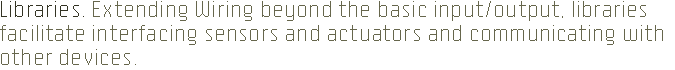

The following libraries are included with the Wiring software. There are Core Libraries which are platform specific and Cross-platform Libraries which are platform independent. To add one to a project, select its name from the "Import Library..." option in the Sketch menu. These libraries are open source; the code is distributed with Wiring.
EEPROM
Basic Wiring I/O board internal EEPROM management library/
EEPROMVar
EEPROM variables management library.
Encoder
Basic Encoder manipulation library.
Firmata
by Hans-Christoph Steiner and maintained by Paul Stoffregen. A generic protocol designed to communicate with Wiring from software on a host computer.
LiquidCrystal
Basic liquid crystal display (LCD) manipulation library (parallel communication, 8 bits).
Matrix
Basic LED Matrix display manipulation library using MAX LED Matrix controllers.
NewSoftSerial.
by Mikal Hart. Supports communication between Wiring and external hardware via software serial ports.
Servo
By Michael Margolis. Servo motor manipulation library.
SoftwareSerial
Supports communication between Wiring and external hardware via software serial ports.
Wire
Two Wire Interface for sending and receiving data over a net of devices or sensors.
SPI
Serial Peripheral Interface Bus or SPI bus for sending and receiving data in a master/slave mode.
Button
A Hardware Abstraction Library for Buttons. It provides an easy way of handling buttons.
Constrain
Easy way of making constrained variables.
FluentPrint
A library that enable a fluent API for printing.
FSM
Provide an easy way of making finite state machines.
HashMap
Implementation of a Hash Map data structure for the Wiring platform.
Keypad
This library provides a simple interface for using matrix keypads.
LED
This is a Hardware Abstraction Library for LEDs. Provide an easy way of handling LEDs in code.
MenuBackend and MenuItem
Provide an easy way of making menus.
Messenger
by Thomas Ouellet Fredericks. Messenger is a "toolkit" that facilitates the parsing of ASCII messages. Also in French. Main site.
NMEA
by Maarten Lamers. Library for easy decoding of GPS data on the Wiring and Arduino hardware. Main site.
OSC
Basic OSC (Open Sound Control) library.
Password
A library to easily simple password handling.
Potentiometer
This is a Hardware Abstraction Library for Potentiometers. Provide an easy way of making/using potentiometers.
Scheduler
Provide an easy way of scheduling function calls somewhere in the future.
SmoothInterpolate
Make it easy to interpolate smoothly from x to y in z steps (between each value).
Supervisor
Supervise a set of rules that automatically fire a handler for when the rule is broken.
Sprite
Basic image sprite manipulation library for use in animations with an LED matrix.
Stepper
Basic stepper motor manipulation library.
TimedAction
Provide an easy way of triggering functions at a set interval.
Wiring/Processing
This library allows to control the Wiring I/O board from Processing without writing code in the Wiring IDE. It uses the Firmata protocol.
Wiring/OpenFrameworks
This library allows to control the Wiring I/O board from Openframeworks without write code in the Wiring IDE. It uses the Firmata protocol.
WiringLib for Processing
by Christoph Wartmann and Etienne Ribeiro The library is in an early stage but is already useful for small applications in Processing. Interface sensors and motors without the need to program it in Wiring, directly in Processing or JAVA!.
Contributed libraries if standard (Wiring libraries style) must be downloaded separately and placed within the "libraries" folder of your Wiring sketchbook or follow the instructions in their respective site. To find the Wiring sketchbook location on your computer, open the Preferences window from the Wiring application and look for the "Sketchbook location" item at the top. Copy the contributed library's folder into the "libraries" folder at this location. You will need to create the "libraries" folder if this is your first contributed library. Follow the links below for more information about each library.
Contributed libraries are developed, documented, and maintained by members of the Wiring community. For feedback and support, please post to the Forum, for development discussions post to Libraries Development.
There is a wide number of libraries developed by the Arduino community, If the libraries use the standard set of commands of the Wiring Framework API they should work fine. Download and install as described above. Check out the Arduino Playground Code Library. For questions/help regarding third party libraries please post to Libraries Development.